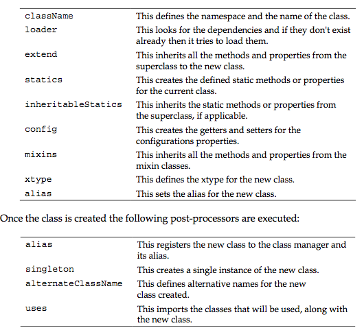

Pre-processors and post-processors
Ext.define: This shorthand internally calls the create method from the class manager in order to create a new class. In addition we can override methods and properties from an existing class.
Ext.create: This shorthand is an alias for the instantiate method from the class manager. We can use this shorthand to create objects from an existing class.
Ext.widget: This shorthand calls the instantiateByAlias method to create instances of the given alias. An alias is a short name for a class.
